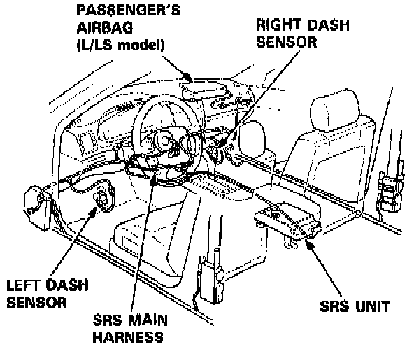
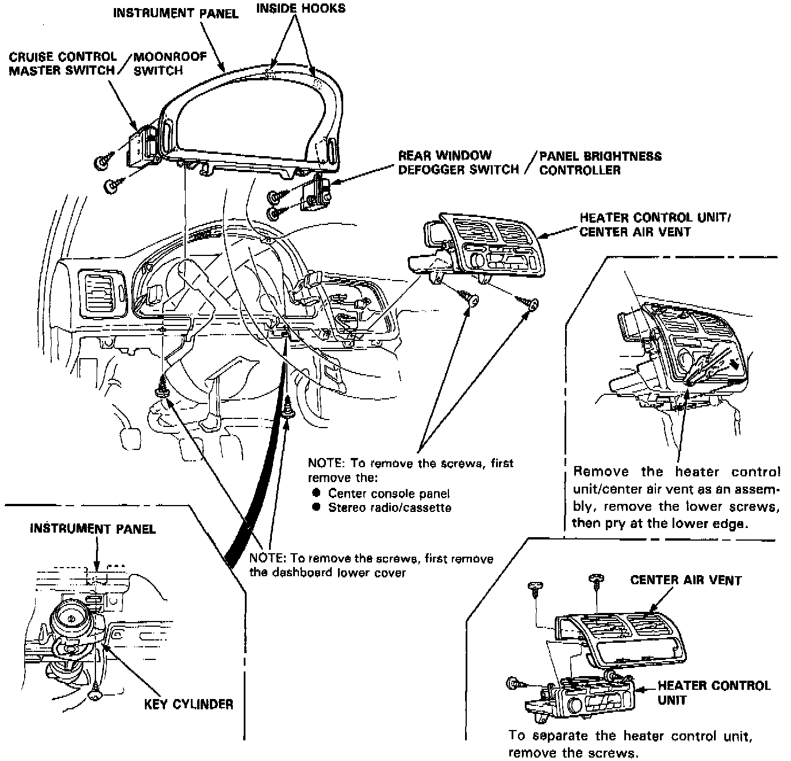
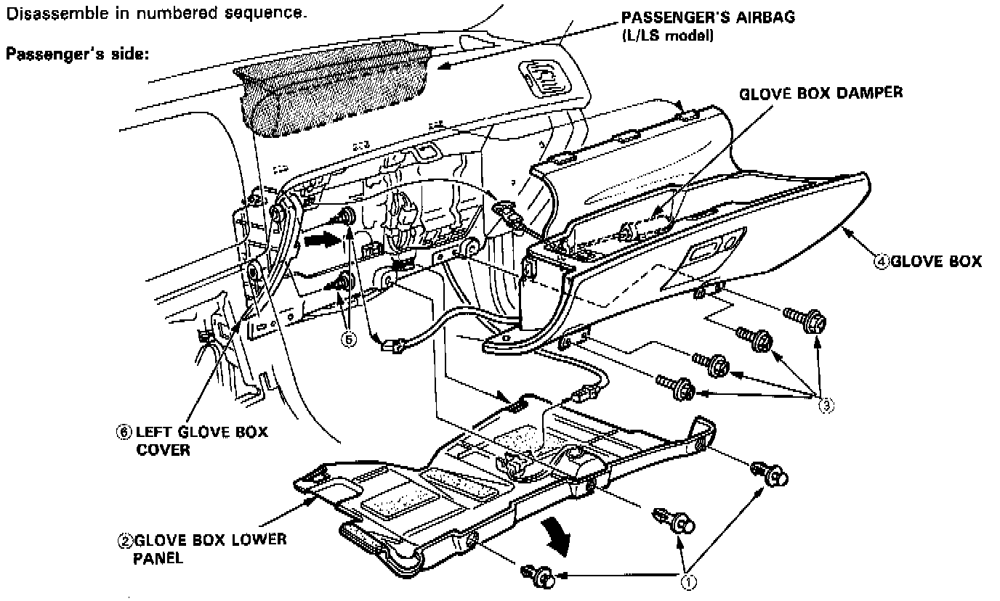
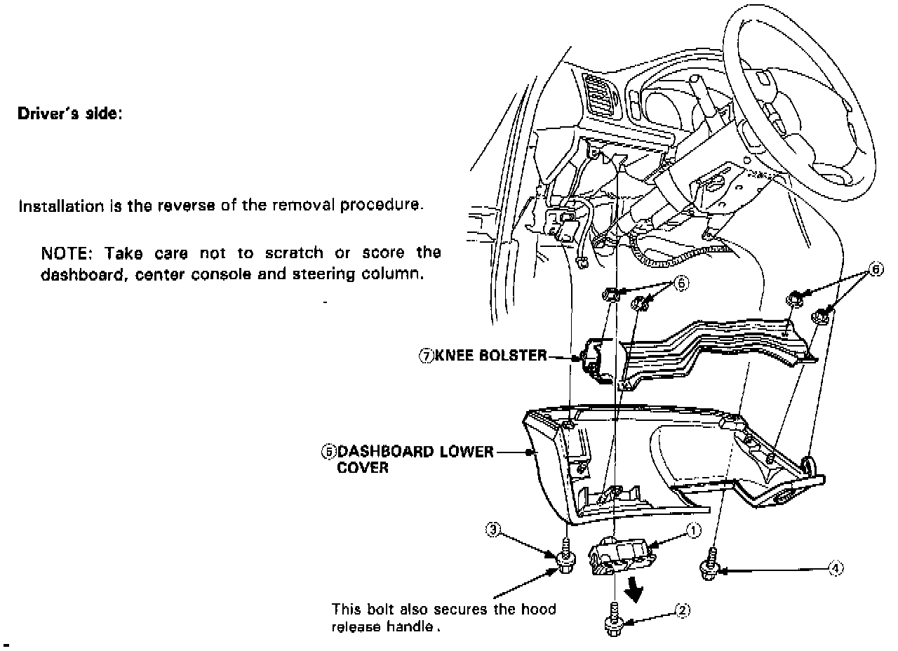

Glove Compartment: Service and Repair

NOTE: SRS wire harnesses are routed near the steering column and the passenger's side of the dashboard.
CAUTION:
- All SRS wiring harnesses are covered with yellow outer insulation.
- Before disconnecting any part of the SRS wire harness, turn the ignition switch off, disconnect the negative and positive battery cables (L and LS models: get the anti-theft radio code number!), wait for at least three minutes, and install the short connectors.
- Replace the entire affected SRS harness assembly if it has an open circuit or damaged wiring.
Instrument Panel And Vents:

Glove Box And Lower Panel:

Driver's Side Components:

DASH COMPONENT REMOVAL / INSTALLATION
- Refer to images for dash component removal details.
- Disassemble in numbered sequence, as shown.
- Take care not to scratch or score the dashboard, center console or steering column.
- Installation is the reverse of the removal procedure.